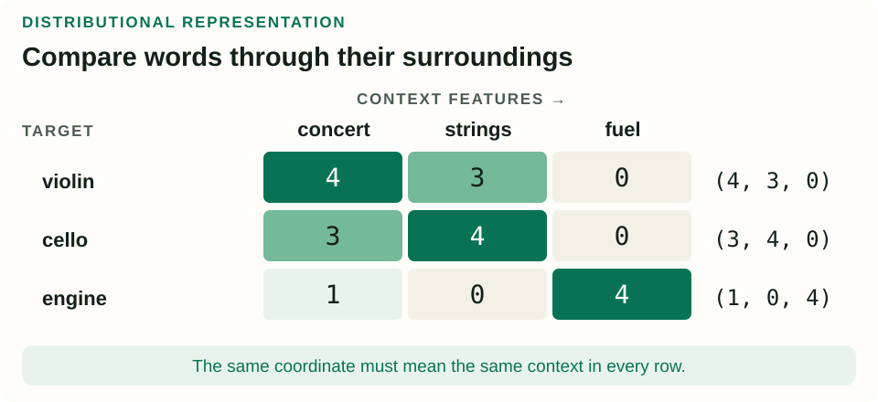
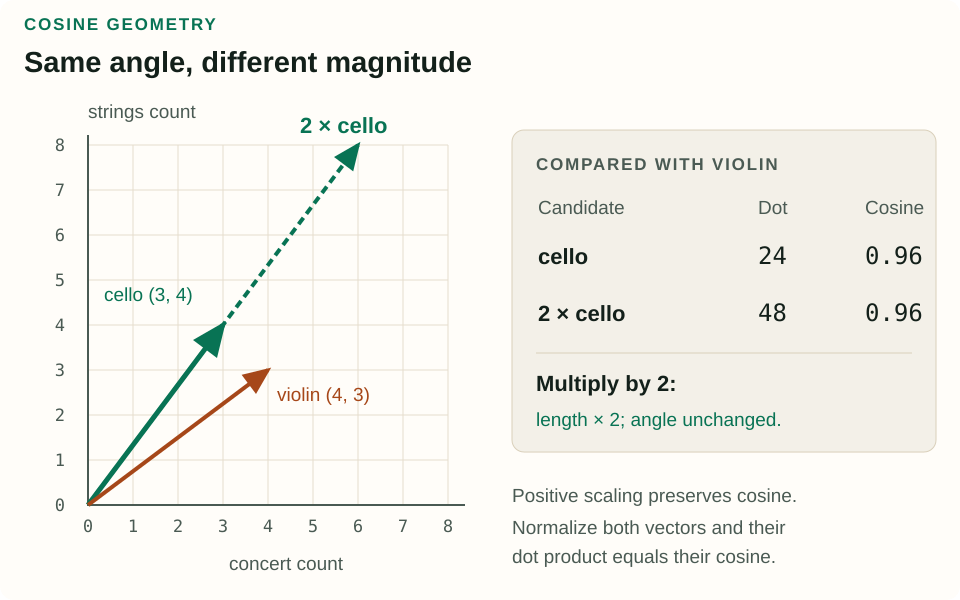
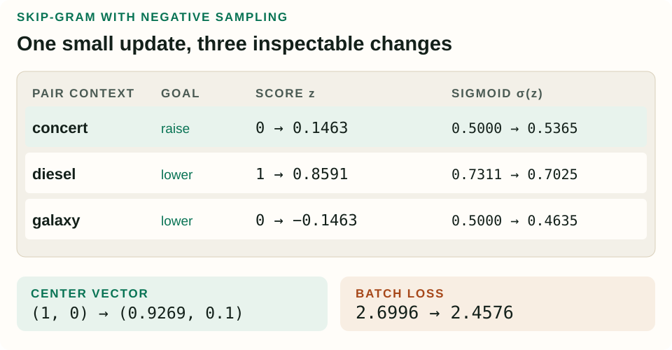

Embeddings: Learning Meaning from Neighbors
A word ID tells a computer which word appeared. An embedding gives it a representation that can share information with other words. The interesting question is how useful geometry emerges from ordinary text.
What you will learn: build a context vector, distinguish direction from magnitude, explain why dense coordinates are learned features, and follow one complete skip-gram update without treating the training objective as a mystery.
This original companion follows Chapter 5, “Embeddings”, of Jurafsky and Martin’s August 19, 2026 draft. Relevant sections are vector semantics and counts (§§5.2–5.3), cosine (§5.4), word2vec (§5.5), visualization and semantic properties (§§5.6–5.7), bias (§5.8), and evaluation (§5.9). All worked examples and figures here are original.
1. A word’s neighbors become its features
Suppose a classifier has learned something useful about violin, then encounters cello. With one-hot vectors, the two words occupy different coordinates, and their dot product is zero. Their encodings offer no clue that both are musical instruments. A useful representation should let the model transfer some evidence between them.
The distributional idea is to look at usage. If two words repeatedly appear near similar words, those shared surroundings provide evidence about their relationship. A cello and a violin may both appear near concert and strings, even in documents that never mention the two instruments together.
Choose a context rule first. For example, a window of two tokens on each side of a target produces up to four target–context pairs per occurrence. In the violin filled the concert hall, that window around violin includes the, filled, and the second the; it does not reach concert. Increasing the window changes the evidence, so “nearby” must be defined.
Count each pair across a corpus. A word–context matrix assigns one row to each target word and one column to each context feature. For the rest of the first example, use the synthetic counts below. They illustrate the arithmetic; they are not measurements from a real corpus.

The violin vector is (4, 3, 0), the cello vector is (3, 4, 0), and the engine vector is (1, 0, 4). Violin and cello agree on which contexts matter. The engine has a little overlap with concert, perhaps from writing about concert equipment, but its largest count is in another dimension.
This is a second-order comparison: compare words through their context profiles. Direct co-occurrence is a different relationship. A violin and a bow often occur together; violin and cello can have similar profiles without being interchangeable in every sentence. Similarity, topical association, and synonymy should not be collapsed into one label.
2. Compare direction, not just size
A dot product multiplies matching coordinates and adds the results. For our two instruments:
v · u = Σj vjuj
violin · cello = 4×3 + 3×4 + 0×0 = 24
The result grows when both vectors have large values in the same coordinates. But it also grows with magnitude: if the cello counts double, the dot product becomes 48, even though the proportions of its contexts stay identical. If our aim is to compare context patterns, we can remove that size effect.
‖v‖ = √(Σj vj2)
cos(v, u) = (v · u) / (‖v‖ ‖u‖)
cos(violin, cello) = 24 / (5×5) = 0.96
cos(violin, engine) = 4 / (5×√17) ≈ 0.194
Cosine measures the angle between two nonzero vectors. Multiplying either vector by a positive number leaves the angle unchanged. Identical directions have cosine 1; perpendicular directions have cosine 0. Opposite directions have cosine −1, although nonnegative count vectors cannot produce negative cosine.

Try the difference between dot product and cosine
Keep violin fixed at (4, 3, 0). Change the candidate or multiply its vector by a positive scale.
Scaling preserves the candidate’s direction, so its cosine stays fixed.
Cosine is undefined for a zero vector. Decide explicitly what to do with an unseen word whose count row is entirely zero. Also, vectors must use compatible coordinates: comparing position 1 of one model with position 1 of an independently trained model is generally meaningless.
Check yourself: When are dot product and cosine numerically identical?
When both vectors have unit length. Normalize each nonzero vector by its own norm; then the denominator in the cosine formula is 1. Raw learned embeddings do not automatically satisfy this condition.
3. Make counts more informative
Raw counts give common contexts considerable influence. Seeing the near a word may say less about that word than seeing a distinctive technical term. Two classic weighting ideas ask different questions.
TF-IDF is commonly used for document vectors. One simple version multiplies a term’s count in document d by log(N/df), where N is the number of documents and df counts documents containing that term. A word appearing twice in one of four documents gets 2 ln(4/1) ≈ 2.773. A word present in all four gets IDF zero under this convention. Variants use different term-frequency transforms and smoothing. See the Stanford information-retrieval text’s TF-IDF explanation.
Pointwise mutual information compares a pair’s probability with what independence would predict:
PMI(w, c) = log2[P(w, c) / (P(w)P(c))]
PPMI(w, c) = max(0, PMI(w, c))
In a separate toy collection of 100 target–context pair events, suppose a target appears in 20 events, a context in 10, and the pair together in 8. Independence predicts 100×0.2×0.1 = 2 joint events. Observing 8 gives PMI = log2(8/2) = 2 bits. This measures association beyond the marginal frequencies.
PPMI discards negative association scores. Rare pairs can get large estimates from little evidence, so weighting does not remove the need for adequate data. Keep document counts and pair-event counts conceptually separate: they have different sample spaces. The textbook’s Appendix J on PPMI develops the association weighting in more detail.
4. Learn a compact representation
A vocabulary with 50,000 context features gives every count vector 50,000 coordinates. Most may be zero, making this a sparse representation. Sparse storage can preserve only nonzero entries; there is no need to allocate a giant dense matrix just to implement the idea.
A dense embedding instead assigns each word a short learned vector, perhaps 100 coordinates. Its coordinates are real numbers, often positive and negative, and do not correspond directly to named context words. If a vocabulary has V words and dimension d, an embedding table contains Vd numbers. Looking up a word means selecting its row.
Dense coordinates can share evidence across many contexts. But “dimension 12 means musicality” is usually unjustified. Rotating all vectors by the same orthogonal transformation preserves their dot products and cosines while changing every coordinate. Relationships can be meaningful even when an individual axis has no unique interpretation.
Compactness also does not prove that a method will win every evaluation. Results depend on context choices, weighting, training data, and tuning; Levy, Goldberg, and Dagan (2015) demonstrate the importance of such choices in comparisons between count-based and learned representations.
We will learn dense vectors with skip-gram with negative sampling, or SGNS. It belongs to the word2vec family. Skip-gram starts from a center word and its surrounding words; the related CBOW approach predicts a center word from its context. Here we focus on the SGNS objective introduced by Mikolov and colleagues (2013).
5. A complete negative-sampling update
For each word, store two vectors: an input vector v when it is the center, and an output vector u when it appears as context. These are separate parameter tables. Their dot product scores a center–context pair.
Take an observed pair, such as (violin, concert), and label it 1. Sample a few context words from a noise distribution and label those pairs 0. A common noise distribution is proportional to count(word)0.75, giving a flatter distribution than raw frequency. A negative sample is a generated training example; its label does not establish that those words can never occur together.
Apply the sigmoid to each pair score and minimize binary cross-entropy, as in the logistic-regression companion:
z = v · u, σ(z) = 1 / (1 + e−z)
L = −ln σ(v · u+) − Σi=1…k ln σ(−v · u−,i)
The positive term rewards a high observed-pair score. The negative terms reward low noise-pair scores. There is no sum over the whole vocabulary in this sampled loss. Its sigmoid estimates membership in the constructed positive-versus-noise classification problem; it is not a normalized next-word probability P(context | center).
Choose numbers we can inspect
Use a two-dimensional teaching model with center vector v = (1, 0). Set the concert context vector to (0, 1), the diesel context vector to (1, 0), and the galaxy context vector to (0, −1). These are invented starting parameters, not trained semantic coordinates.
| Context | Label y | u | Score z | σ(z) | Loss |
|---|---|---|---|---|---|
| concert | 1 | (0, 1) | 0 | 0.5000 | 0.6931 |
| diesel | 0 | (1, 0) | 1 | 0.7311 | 1.3133 |
| galaxy | 0 | (0, −1) | 0 | 0.5000 | 0.6931 |
Total loss is 2.6996 using natural logarithms. Diesel contributes the largest loss because the classifier currently gives that negative example a high positive-class probability.
For a single pair, the derivative with respect to its score is σ(z) − y. The chain rule then gives a context-vector gradient (σ(z) − y)v, and a center-vector gradient (σ(z) − y)u. The center participates in all three pairs, so add their contributions:
∂L/∂v = −0.5(0, 1) + 0.7311(1, 0) + 0.5(0, −1)
∂L/∂v ≈ (0.7311, −1)
With learning rate η = 0.1:
v′ = v − η∂L/∂v ≈ (0.9269, 0.1)
Updating the three context vectors at the same time gives u′concert = (0.05, 1), u′diesel ≈ (0.9269, 0), and u′galaxy = (−0.05, −1). All gradients use the old vectors. Using the already-updated center inside the other updates would compute a different step.

The updated scores are approximately 0.1463, 0.8591, and −0.1463; the positive-class probabilities become 0.5365, 0.7025, and 0.4635. Recomputing this batch’s loss gives 2.4576. One step has improved the observed pair and both sampled negatives, while diesel still needs further learning.
Across many windows, words that face similar prediction problems can acquire similar input vectors. Downstream applications commonly keep the input table; using or combining the two tables is another choice that must be stated. When computing word–word cosine, compare vectors from the selected representation consistently. Training’s input–output dot product and evaluation’s input–input cosine serve different purposes.
Check yourself: Why would initializing every vector to zero prevent this model from learning?
Every probability starts at 0.5, but every vector gradient is a scalar times another zero vector. All updates are zero. Nonzero initialization breaks this deadlock. Merely having a nonzero loss is not enough to guarantee a useful parameter gradient.
6. What the geometry can and cannot tell us
A static embedding assigns the same vector to crane in a construction report and a bird guide. Its row aggregates evidence from both senses; a nearest-neighbor list can mix them. Contextual representations address this by computing a representation for each occurrence using its sentence. The distinction is about what the vector depends on, not just its dimensionality.
Neighbors also need interpretation. increase and decrease can appear in similar grammatical environments while meaning opposite things. A cosine of 0.9 is not a 90% probability of synonymy. And a two-dimensional projection can distort distances: use it for inspection, then verify neighbor claims in the original vector space.
Text also contains social associations and stereotypes. A learned geometry can retain those associations and pass them into a downstream model. Removing one identified direction does not establish that the representation is free of the association; Gonen and Goldberg (2019) show that bias can remain in neighborhood structure after some debiasing transformations. Evaluate the behavior relevant to the intended application.
| Evaluation | What it tells you | What to inspect |
|---|---|---|
| Word-pair similarity judgments | Agreement with human ratings on a selected benchmark | Similarity versus relatedness, coverage, frequency, languages |
| Nearest-neighbor inspection | Specific relationships and conspicuous errors | Polysemy, spelling variants, unexpected associations |
| Downstream task comparison | Whether embeddings help the actual application | Same data splits, fair baselines, subgroup and rare-word errors |
| Repeated training runs | Stability under sampling and initialization | Variation in both scores and neighbor lists |
For a concrete test, replace one-hot word features in a small text classifier with an embedding-based representation. Keep the held-out documents fixed and compare the resulting errors, especially on words scarce in training. This tests whether sharing information helped the task, rather than whether a scatter plot looked convincing.
The next step is to learn more expressive functions of these vectors. The neural-networks companion builds from linear scores and sigmoids to hidden layers, backpropagation, and learned representations used inside a larger model.